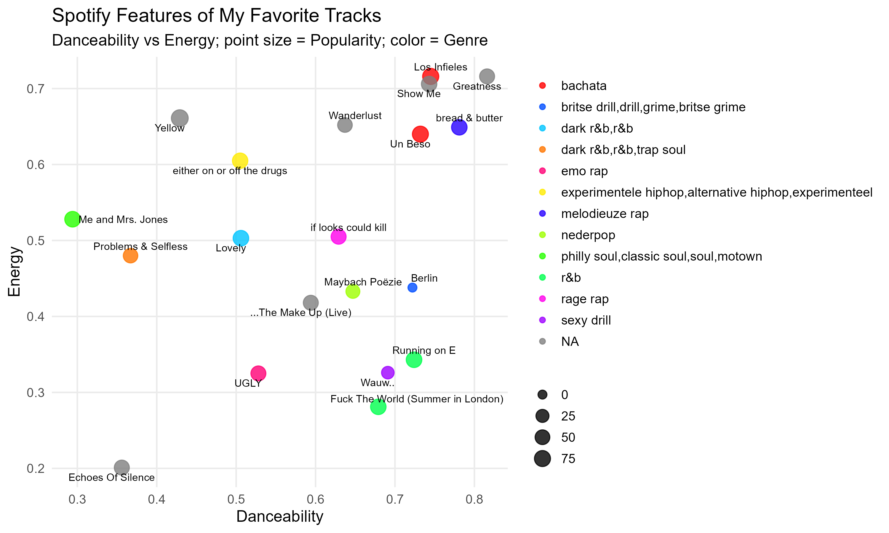
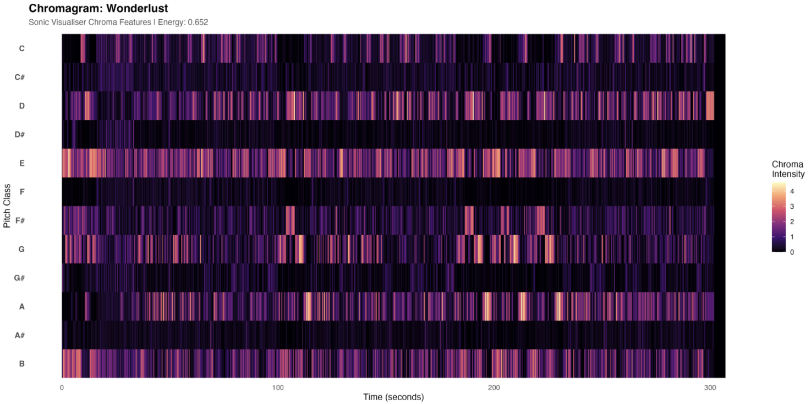
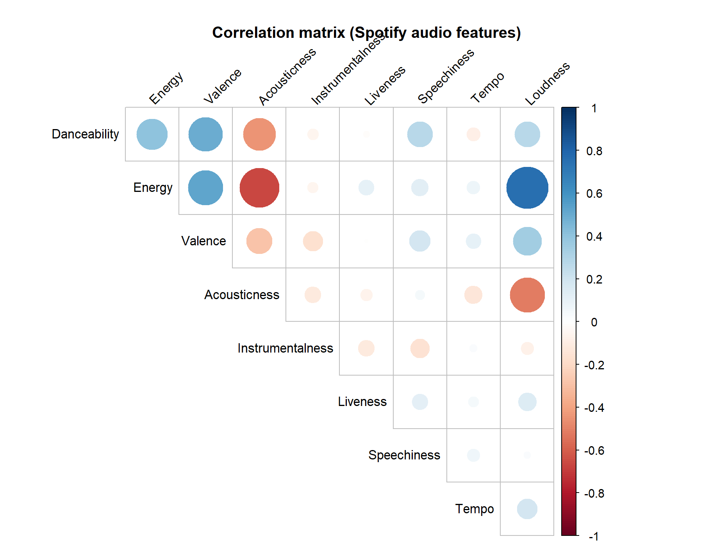
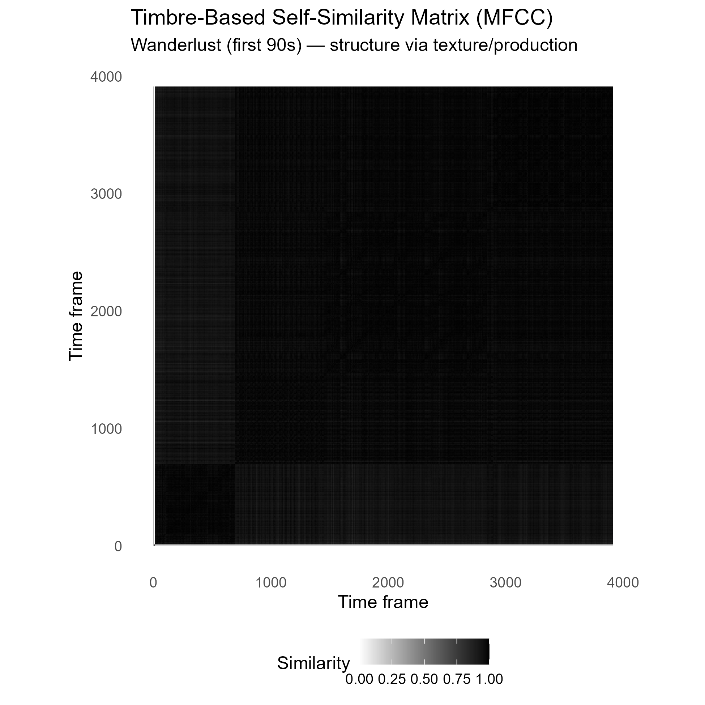
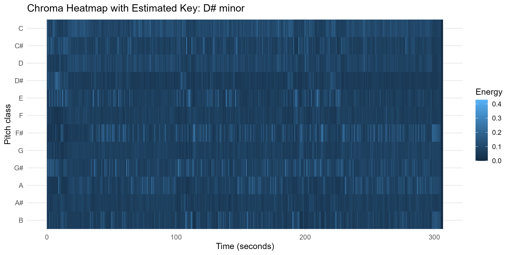
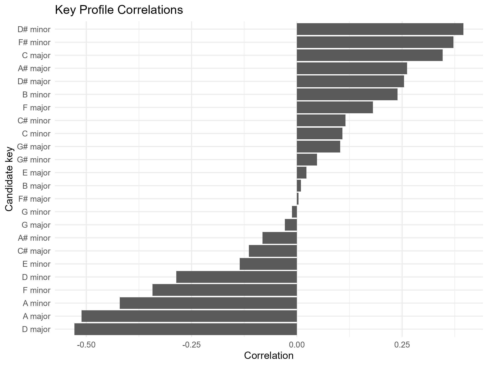

Computational Musicology – Playlist Analysis
Introduction
This project analyzes a personal Spotify playlist consisting of 100+ favorite songs across multiple languages (Dutch, English & Spanish), genres (rap, trap, R&B, pop), and artists (e.g., The Weeknd, Michael Jackson, Frenna, Coldplay, 2pac).
Although the playlist appears stylistically diverse, does feature-based analysis reveal structural consistencies?
Week 7 – Corpus Description & Spotify Feature Visualisation
Corpus Description
The corpus consists of 20 (later expended to 101) tracks drawn from my personal Spotify favourites. The playlist spans Dutch and English repertoire and includes rap, drill, R&B, soul, pop, and alternative hip-hop. Rather than being curated around a single genre, the playlist reflects long-term listening habits, making it suitable for exploring whether perceived diversity aligns with measurable acoustic features.
The central research question is:
Does my seemingly diverse musical taste share structural similarities when examined through computational audio features?
Using Spotify’s track-level features (danceability, energy, popularity, etc.), this corpus allows comparison between genre labels and measurable musical properties. The dataset includes artists ranging from melodic rap and British drill to soul and Latin pop, providing contrast in rhythm, harmony, and production style while remaining part of a coherent personal listening profile.
Spotify Feature Visualisation (ggplot2)
Below is a ggplot2 visualisation of track-level Spotify features:
- X-axis: Danceability
- Y-axis: Energy
- Point size: Popularity
- Colour: Genre
- Text labels: Selected outliers

What I hear vs what the plot shows
Most tracks cluster in the mid-to-high danceability range (roughly 0.6–0.8) with moderate energy. Listening-wise, this matches a clear preference for groove-forward tracks that stay rhythmically “driving,” even when genre and lyrical style change. Outliers (very low energy / acoustic-leaning tracks, or unusually high energy tracks) map onto moments in the playlist that feel like mood shifts rather than genre shifts.
The visual design aims to reduce chart junk while maximizing information density by encoding multiple variables in one plot (position, colour, size) and labeling notable tracks directly.
Week 8 – Chroma Feature Visualisation (Sonic Visualiser)
For Week 8, I incorporated chroma features extracted using Sonic Visualiser. Chroma features represent pitch-class intensities (C, C#, D, etc.) over time and are useful for analysing harmonic structure beyond surface-level genre tags.
Below is a chromagram of “Wanderlust” by The Weeknd

Description + listening interpretation
The chromagram visualises pitch-class intensity over time. Several pitch bands show recurring activation, suggesting a stable tonal centre with repeating harmonic material. This aligns with what I hear as structured repetition across sections (e.g., verse–chorus cycles), where the harmonic palette stays recognisable even when instrumentation and dynamics shift.
Brighter horizontal regions indicate pitch classes that dominate the track’s harmonic content, while changes in intensity correspond to perceived transitions and build-ups. Compared with the Spotify-feature view (Week 7), which highlights rhythm and energy preferences, this chroma visualisation points to harmonic consistency inside an individual track. Sonically, the piece feels melodically anchored and loop-like in its progressions; the repeating chroma patterns support that perception by showing similar pitch distributions returning across time.
Correlation Analysis (Week 9)
A correlation matrix of Spotify audio features (danceability, energy, valence, acousticness, etc.) shows strong relationships between energy and loudness, and moderate clustering of danceability across genres. This suggests that emotional intensity and rhythm play a stronger role in my musical preference than genre labels.
Correlation Matrix

The correlation matrix shows a strong positive correlation between Energy and Loudness (r = 0.75) and a strong negative correlation between Energy and Acousticness (r = -0.67).
This indicates that the playlist is structurally organized around production intensity rather than genre labels. High-energy tracks tend to be louder and less acoustic, while more acoustic tracks cluster at lower energy levels.
Despite genre diversity (rap, trap, R&B, pop, bachata), the playlist exhibits consistent audio-feature patterns centered on intensity and production style.
Timbre-Based Self-Similarity Matrix (MFCC)

This self-similarity matrix is computed using MFCC features, which capture timbral and production characteristics rather than pitch content. The strong diagonal reflects temporal continuity, while subtle block-like contrasts suggest sectional differentiation.
Listening to the track, the harmonic loop feels relatively stable, but changes in production density and vocal layering mark transitions between sections. The MFCC-based SSM reflects this: the structure is visible, but less sharply segmented than what a pitch-based representation would show. This suggests that the track’s formal clarity is driven more by harmonic repetition than by radical timbral contrast.
Week 10 – Analysis of Keys or Chords
To extend the harmonic analysis, I estimated the tonal centre of one track in the corpus using a chroma-based pitch-class representation in R.

The heatmap shows how pitch-class energy is distributed over time. Recurrent emphasis on the same pitch classes suggests harmonic stability rather than frequent modulation.

The key-profile comparison indicates the most likely global key for the track. Even if the estimate should be interpreted cautiously, it supports the idea that the track is organized around a relatively stable tonal centre and a repeating harmonic framework.
Week 11 – Rhythm and Tempo Analysis
This week extends the dashboard with a rhythm-based perspective by focusing on tempo. Using Spotify’s tempo feature (measured in beats per minute), it becomes possible to analyse how fast or slow tracks are across the playlist.
Tempo Distribution in the Corpus

The histogram shows that tempo values cluster within a relatively limited range rather than being evenly distributed. This suggests a consistent preference for a certain level of rhythmic energy across the playlist.
This reinforces the broader finding of the project: although the playlist spans multiple genres and artists, computational features such as tempo reveal underlying consistency in listening behaviour.